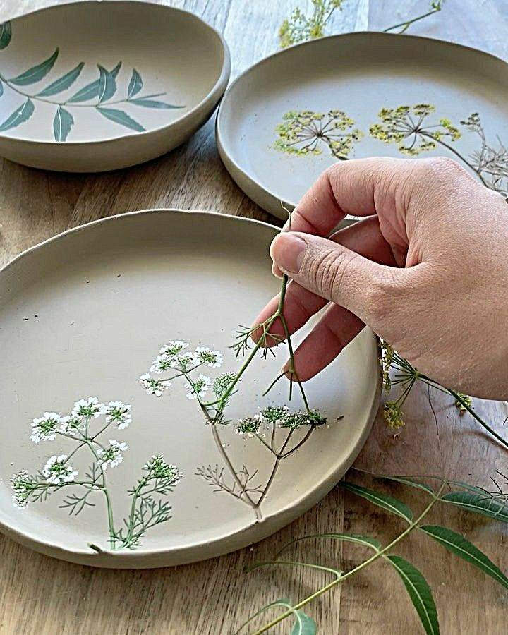
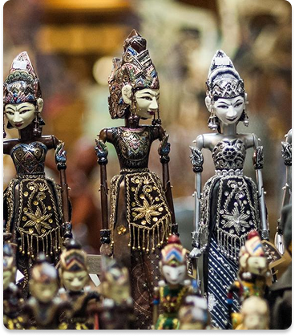

Produk Kerajinan Unggulan

Anyaman Bambu
Kerajinan tangan khas daerah yang menggunakan bambu sebagai bahan utama, menghasilkan produk yang unik dan ramah lingkungan.

Keramik Tangan
Produk keramik yang dibuat secara manual dengan detail artistik tinggi, cocok sebagai hiasan maupun peralatan sehari-hari.

Ukiran Kayu
Kerajinan ukiran kayu yang memadukan tradisi dan kreativitas, menghadirkan seni dan nilai budaya dalam setiap detailnya.
Testimoni Pelanggan
"Produk anyaman bambu sangat berkualitas dan unik. Saya sangat puas dengan pelayanannya!"
"Keramik tangan dengan desain elegan menambah keindahan rumah saya. Sangat direkomendasikan."
"Keramik tangan dengan desain elegan menambah keindahan rumah saya. Sangat direkomendasikan."
"Keramik tangan dengan desain elegan menambah keindahan rumah saya. Sangat direkomendasikan."